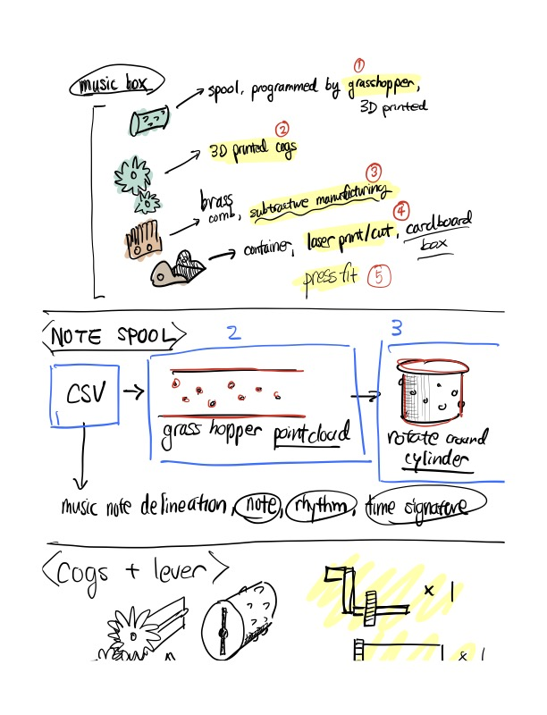

For my final project, I would like to create a music box. Mainly, the music box spool that includes the music annotation will be programmable by Grasshopper, and will be able to be easily removed/added to the music box, allowing for easy customization of songs for the music box.

The music cylinder will be programmed in grasshopper. The pointcloud generated from my notes CSV will then be transformed
and applied to a cylinder solid polysurface, which will create extrusions on the cylinder for the note delineation.
Originally, I wanted to leverage flat.io's API to convert my custom music notation into data points using Python so that
the translational work would become a lot easier. However, due to time constraints, I will do manual calculations in spreadsheet
format.
Above is an example of how I converted first few measures of Arirang into point clouds, that will then be mapped in grasshopper into a cylinder. I leveraged an existing STL file on thingiverse (music box for Super Mario theme), which will be base a lot of my fabrication base.
I'm worried about finishing my project on time, so I actually ordered a music comb part online. This will arrive tomorrow, but I also ordered brass sheets just in case I may have more time to incorporate subtractive manufacturing with CNC mill. Even if I don't include subtractive manufacturing, I will still be able to include 4 fabrication methods we learned in class.
I'll be leveraging an stl for Super Mario Music Box from thingiverse to guide creating cogs and levers. Hopefully, this will help in making my project overhead a lot simpler. Traditional music boxes usually contain spring housing to allow the cylinder/spool to rotate with constant velocity, but to finish the project by Dec 9th, the music box I will create will require manual movement input via lever and cogs.
The music box will include a cardboard exterior, with potential room for custom engravings. The parts will be press-fit so that the notes cylinder/spool can be removed easily for switching between various music.
Since I will not have access to my 3D printer over the holidays, until November 28th, I will focus on modeling my designs until then. I am trying to give
myself a few days for final assembly, as well as optional assignment of milling my brass sheet to create a music comb, rather than using a pre-built part.
While I'm in DC, I also searched up a makerspace nearby that I could potentially go to over the weekend to print some of my materials, if I do finish early.
I also have some PTO left for the calendar year for work, so I will be leveraging that for one of the days, if things get too busy.
Documentation for Assignment 7:
Notion Docs for Contingency Plan & Bill of Materials
Credits:
Super Mario Music Box